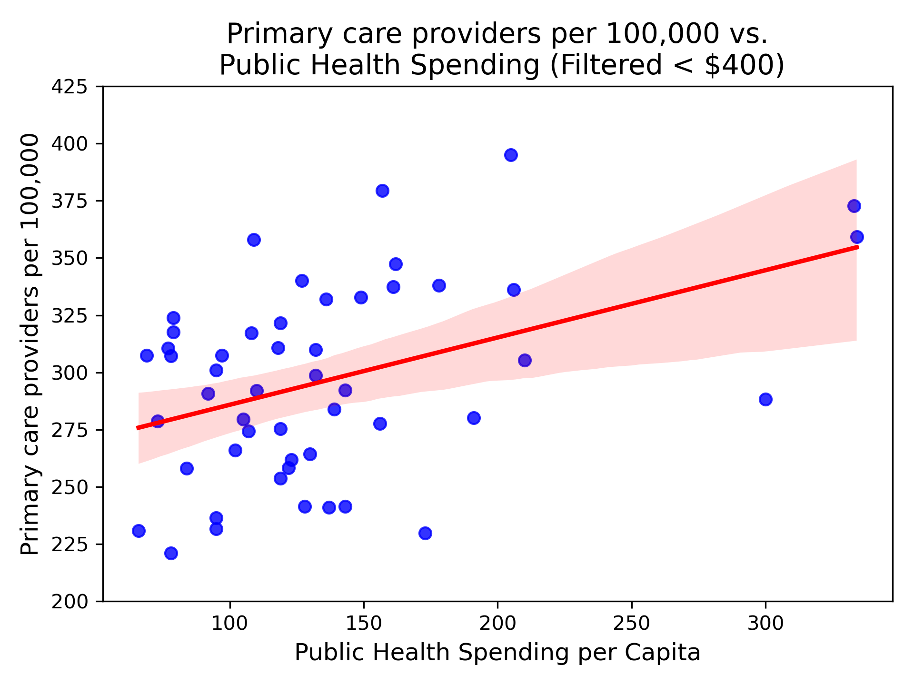
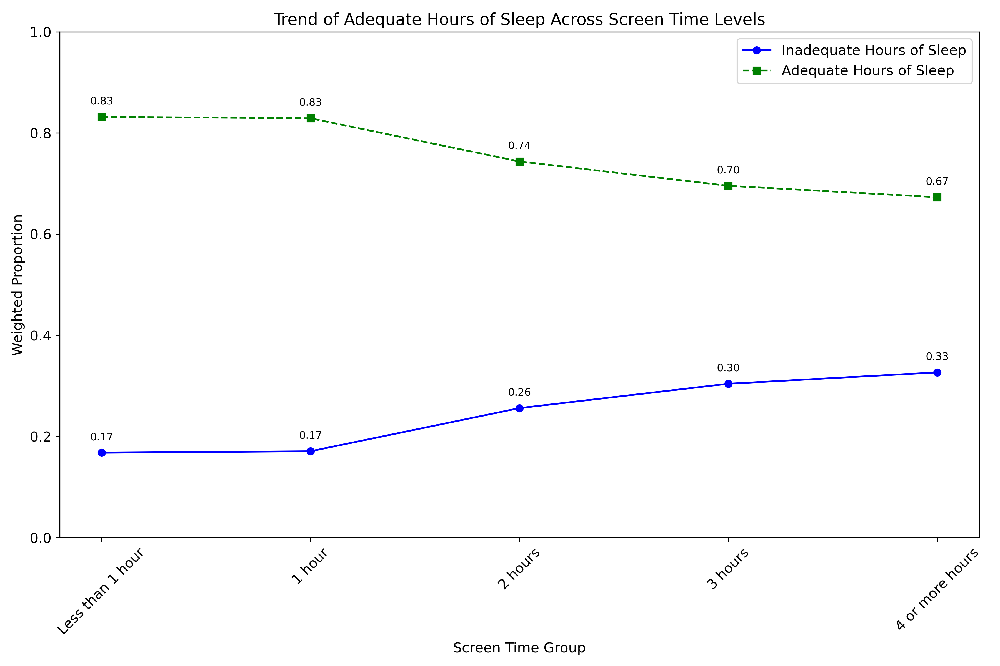

Data Preparation & Exploratory Data Analysis

Data Preparation
The NSCH 2023 data are not available directly through an API, as users must agree to follow
the NSCH data use requirements. Instead, SAS, Stata, or CSV data files with corresponding codebooks can be downloaded from the
Data Resource Center
and the
US Census Bureau. Due to these
requirements, the data are not stored directly on the GitHub page, as each user must agree to these conditions.
Once the NSCH 2023 CSV file was downloaded, the data were read into Python using the program
1a_NSCH_family.
Identifiers and features of interst were kept. The NSCH data include FIPS codes for the states. New variables for the state long and short names were added. Missing codes of 95 and 99
were replaced with NAN. Records that were missing data for important analysis variables were removed, as the number missing relative to
the total is small, specifically:
- overall health of the child (missing 131),
- preventative care (missing 457),
- place where take child when sick (missing 219),
- insurance (missing 348),
- poverty level not missing, as they used imputation
Other variables that are missing more often are family WIC status (missing 1272), screen time (missing 749), and number places lived in the last year (missing 1420). For analyses which include these variables, we will limit the analysis to non-missing responses, as missing values are across all states and appear to be missing at random. Lastly, the program outputs a csv file (NSCH_fam.csv with N=54,159 children).
Next, the child-level data (NSCH_fam.csv) are rolled-up to the state-level by calculating weighted proportions of the children with a given response using the Python program 1b_NSCH_state_data. A csv file with the state-level weighted proportions is output (NSCH_state.csv with 51 records (each of the 50 states and Washington DC)).
The AHR data are available through the AHR API, which requires that users register and obtain an API key. Data use is intended for non-commercial, educational, scientific, or charitable use. Additionally, attribution of source (AHR and any underlying data sources) is required in any output.
The API was called using Python following the code 1c_AHR_API_and_state_data. A csv file of the data was output (AHR_state.csv with 51 records).
Finally, the NSCH and AHR state-level data were merged together and the csv of the combined data was output (NSCH_AHR_state.csv with 51 records) using the python program 1d_NSCH_AHR_combined_state_data. This datafile includes analysis variables, which are used in the data exploration and analysis.
Exploratory Data Analysis (EDA)
As noted in the introduction, this research explored 10 questions. Results of the EDA for each question are provided below. As a reminder, state-level comparisons included the 50 states and District of Columbia (N=51). For state-level comparisons, the NSCH was weighted using the sampling and response rate for the child and rolled up to the state level. Individual-level comparisons for the NSCH are weighted with the sampling and response weights and include all respondents with non-missing values (N=54,159).
Question 1: What is the relationship between the percentage of households living below the federal poverty level (AHR, 16184:poverty) and children receiving
preventative care check-ups (NSCH, state-level, C1/C2, 1 or more visits versus no visits, PrevMed_23)?
On average, states reported over 10% of households living below the federal poverty level (median(P25, P75) = 12.2(11.05,13.65)). The percentage of children
receiving at least one preventative care visit ranged from 69.8% to 89.3%. Figure 1 illustrates that as the percentage of households below the federal poverty
level increases (i.e. more people living in poverty), the percentage of children receiving preventative care decreases.
Figure 1
Question 2: What impact does the percentage of children who received by age 24 months all recommended vaccines (AHR, 18114:vaccination, low versus medium or high coverage)
have on children receiving preventative care check-ups (NSCH, state-level, C1/C2, 1 or more visits versus no visits, PrevMed_23)?
Median vaccine coverage was 67.7% across the states. If we considered < 67.5% as low coverage and 67.5% or greater as medium to high coverage, we see that the percentage
of children receiving at least one preventative care visit is slightly higher in the medium or high group. Specifically, in the low immunization group, a median
of 79.4% of children and for the medium or high group, a median of 80.9% of children received a preventative care visit. This suggests that preventative care may
play a role in childhood immunization coverage.
Figure 2
Question 3: How does public health funding per person (AHR, 3837:public health funding) influence number of active primary care providers per 100,000 population (AHR,
17673:primary care provider)?
On average, states spend between $100-200 per capita on public health (median(P25, P75) = $123 (96.0, 156.5)). As shown in Figure 3, as per capita public health
spending increases, the number of active primary care providers per 100,000 people also increased.
Figure 3

Of note, Washington DC is excluded from Figure 4. DC has active providers per 100,000, and public health spending per capita in DC is $1,084.
Question 4: How does the number of active primary care providers per 100,000 population (AHR, 17673:primary care provider)
relate to a child having a place to receive care regularly (NSCH, state-level, C8, place usually take child when sick, K4Q01)?
As the number of active primary care providers per 100,000 population increases, the percentage of children who have a regular place to
receive care also increases (Figure 4).
Figure 4

Of note, Washington DC is excluded from Figure 4. DC has active providers per 100,000, and the percent of children in DC who have a place
to receive care regularly is 77.6%.
Question 5: How does at least one preventative care visit (NSCH, individual-level, C1/C2, 1 or more visits versus no visits, PrevMed_23) influence overall child health
(NSCH, individual-level, A1, excellent/very good/good/fair/poor, K2Q01)?
Health status does not differ by whether a child had a preventative care visit. The proportion of children in each of the five health status groups appears
similar for those with and without preventative care (Figure 5).
Figure 5

Question 6: What effect does having continuous and adequate insurance (NSCH, individual-level, E2/E3, insurance status, smAdeqIns_23) have on overall child health
(NSCH, individual-level, A1, excellent/very good/good/fair/poor, nomChHlthSt_23)?
As the child'e health status worses from 'Excellent' to 'Poor', we see a trend with adequate insuance coverage decreasing. As shown in Figure 6, among those with
excellent health, 69% have adequate insurance. This drops to 45% having adequate insurance among those with poor health.
Figure 6
Question 7: How does family's poverty level (NSCH, individual-level, K3, income, povlev4_23 (Income level based on family poverty level status, imputed) ) impact overall
child health (NSCH, individual-level, A1, excellent/very good/good/fair/poor, nomChHlthSt_23)?
As overall health status decreases, the proportion of children at the highest income group (i.e. 400% or more of the poverty level) also decreases (Figure 7a).
The relationship between health status and poverty is also evaluated for those below the federal poverty level in Figure 7b and shows that as health worses more children
are in families below the poverty level.
Figure 7a

Figure 7b

Question 8: What is the relationship between benefits from the Women, Infants, and Children (WIC) Program (NSCH, individual-level, I7, Yes/No, WIC_23)) and overall child health
(NSCH, individual-level, A1, excellent/very good/good/fair/poor, nomChHlthSt_23)?
The most vulnerable health groups are those children in the "good", "fair" and "poor" categories. We see that families that have support from WIC tend to be in the "good" and "fair"
categories and less so in the "poor" health category.
Figure 8

Question 9: Among teenagers, what impact does use of electronics (NSCH, individual-level, H6, time spent in front of the TV/computer/cellphone playing games/social
media (not counting homework), ScreenTime_23) have on whether child slept the average recommended number of hours for age (NSCH, individual-level, H5, hours, HrsSleep_23
(Child slept recommended age-appropriate hours during an average day/on most weeknights, age 4 months – 17))?
Limiting screen time appears to play a role for adequate hours of sleep for teenagers. Once the average hours of screen time exceed 1 hour per day, the weighted proportion of teens
experiencing inadequate sleep nearly doubles from 17% for 1 hour to 33% for 4 or more hours.
Figure 9

Question 10: Does moving two or more times in the last year (NSCH, individual-level, I11, number of places lived in the last year greater than 2, PlacesLived_23) influence children
receiving preventative care check-ups (NSCH, individual-level, C1/C2, 1 or more visits versus no visits, PrevMed_23)
Children experiencing housing instability or living three or more places in the last year received a preventative care visit 69% of the time. Conversely, 80% of children who did not move more
than once experienced a preventative care visit.
Table 1